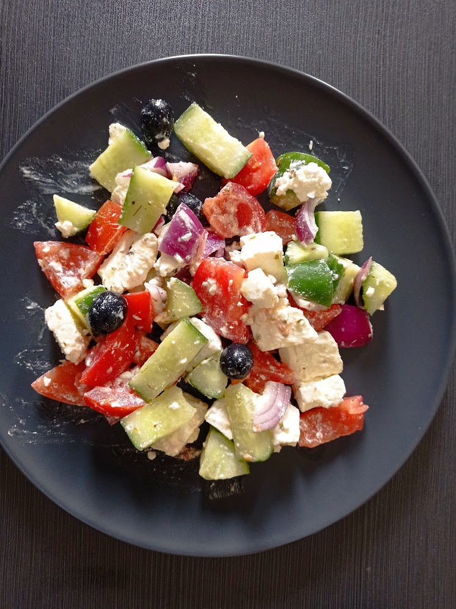

Greek Salad

The Perfect Summer Salad
This summery salad is perfect for hot days and can be made ahead to take to picnics and BBQs.
It's super quick to whip up and is good as a main or as a side dish paired with other Greek classics like lamb gyros.
Ingredients
- 1 cucumber
- 1 red onion
- 2 tomatoes
- 1 can or jar of black olives
- 1 block of Greek feta
- Extra-virgin olive oil
- Red wine vinegar
- Oregano
Steps
- Chop the cucumber, red onion, tomatoes and feta into roughly 2cm cubes and add to a large mixing bowl
- Drain the black olives and add them to the same bowl
- In a small jug, mix together the extra virgin olive oil, red wine vinegar, oregano and a pinch of salt to make a vinegrette
- Taste for seasoning, pour the mixture over the bowl of salad vegetables and mix well
- Serve as a main with hummus and pittas, or as a side with your favourite Greek dish